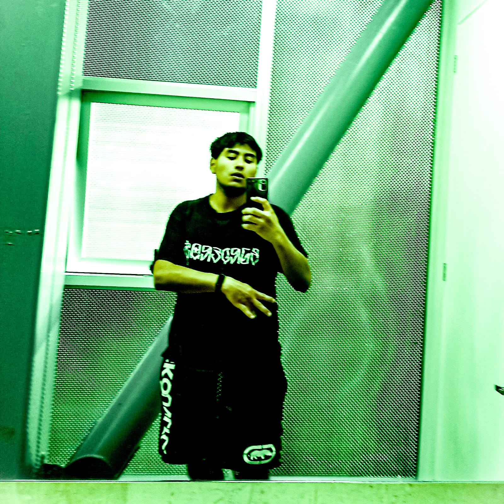

Diego Antonio García Silva
Me llamo Diego, Duki para los panas, nací en pequeño pueblo en Oaxaca. Desde niño me ha gustado la música, es algo que a mis 23 años lo retomé, me gusta al arte, no sé mucho de eso, pero lo que voy aprendiendo me gusta adaptarlo a mí manera. Estoy de foráneo en puebla desde hace 3 años, no esta mal, es muy diferente a mi rancho obvio, yo siempre digo que es la misma burra, pero revolcada. Puede parecer que estoy loco, a lo mejor y sí, pero a pesar de eso hay gente que confia en mi, son muy pocas, pero son las que necesito, no me quejo de nada, la vida te pone los obtaculos, y a las personas adecuadas para sobrepasarlos. ¡Hey pa o niña o niño o mensin!, quien sea que lea esto, no te rindas y trabaja duro en lo que te gusta, lo haces bien solo confia en ti y no te rindas, "Un ganador es un perdedor que nunca se dio por vencido" te podría contar muchas cosas, pero es mejor que las vivas, encunetra lo que te apasiona, no dejes de ser un niño, ama, cuida, llora, divierte son cosas que te hacen humano y estar vivo, no es malo sentir, no tengas miedo a lo desconocido, sé que no es facil, pero si lo fuese cualquira podría hacerlo, ¡Tú no eres cualquiera!, ponte vrga, que si tu no lo haces, nadie lo hará por ti. Es lo unico que tengo para contar, nos vemos pronto. "Hasta aquí mi reporte Joaquin". P.D: Si te gusta el trap eschcua a C.R.O y al Duko You Now.